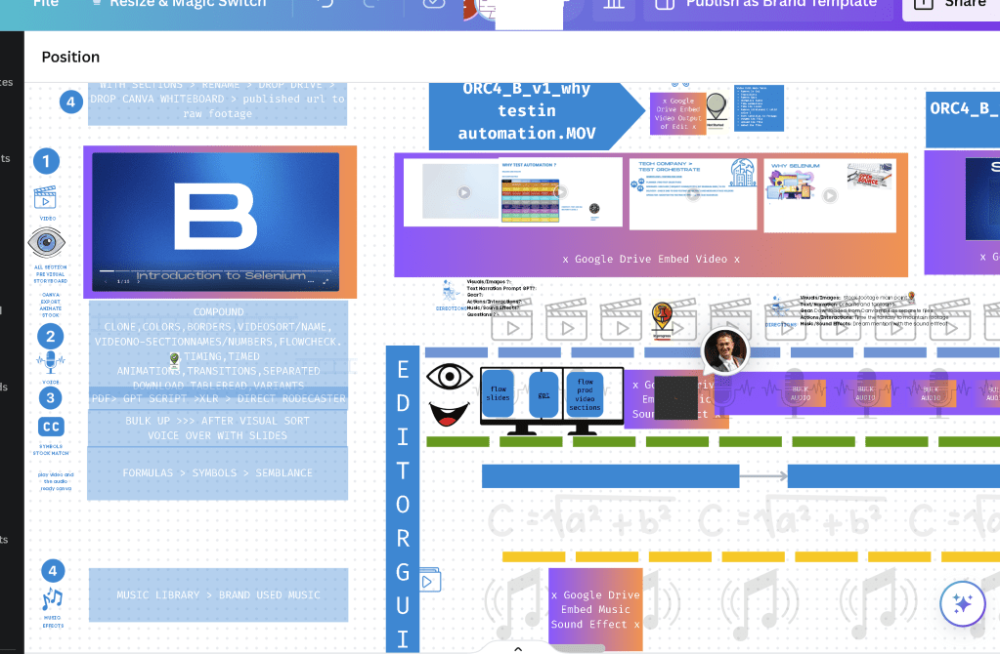

Creating Seamless Voiceovers with Previz, GPT, and Production Flow
In the fast-paced world of content creation, finding efficient ways to produce high-quality voiceovers can be a game-changer. Recently, I discovered a streamlined process that leverages the capabilities of Canva for previz, GPT for scriptwriting, and a structured production flow to create seamless and meaningful voiceovers. Here's how I did it.
Utilizing Previz from Canva
On the left side of my white screen setup, I had the previz (pre-visualization) from Canva. This feature allowed me to storyboard my video project, providing a clear visual representation of each scene. The storyboard not only helped in planning but also served as a constant visual reference while recording the voiceovers.
Crafting the Script with GPT
In the center of my setup, I employed GPT to generate a detailed prompter script. By creating a specific prompt, I asked GPT to write a comprehensive script that aligned with the storyboard from Canva. This step was crucial as it ensured that the narrative flowed logically, matching the visuals prepared in the previz.
Structuring the Production Flow
On the right side of the white screen, I set up the production flow. Here, I organized all the videos generated from the previz into a cohesive sequence. This structured approach allowed me to see the overall progression of the video project, ensuring that each segment transitioned smoothly into the next.
Integrating the Three Components
The real magic happened when I integrated these three components:
-
Previz on the Left: The visual storyboard from Canva served as a guide, keeping me on track with the visual elements of the project.
-
Script in the Center: The GPT-generated script provided a detailed narrative that I could follow, ensuring that the voiceover content was coherent and aligned with the visuals.
-
Production Flow on the Right: The organized sequence of videos allowed me to see the project as a whole, making it easier to maintain continuity throughout the voiceover.
While recording the voiceovers, I continuously checked these three elements to ensure they were in sync. By referring to the previz, script, and production flow simultaneously, I was able to create a more cohesive and meaningful voiceover. This method minimized the chances of errors and inconsistencies, resulting in a polished final product.
The Benefits of This Approach
This integrated approach to voiceover production offers several benefits:
-
Enhanced Continuity: By constantly cross-referencing the previz, script, and production flow, I maintained a seamless narrative that flowed naturally from one scene to the next.
-
Increased Efficiency: Having a clear plan and script reduced the time spent on revisions and retakes.
-
Improved Quality: The alignment between visuals and narrative ensured that the final product was professional and engaging.
In conclusion, combining Canva's previz, GPT-generated scripts, and a structured production flow has revolutionized my voiceover process. This method not only simplifies the production workflow but also enhances the overall quality of the content. If you're looking to improve your voiceover projects, I highly recommend giving this approach a try.

Imported from rifaterdemsahin.com · 2024